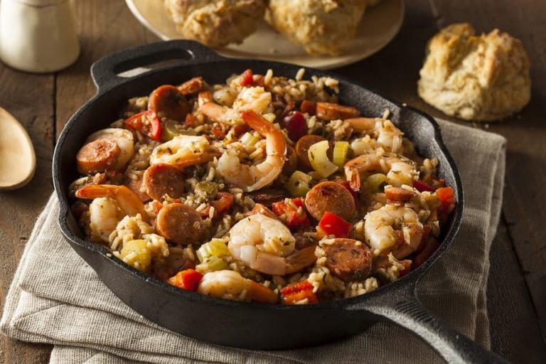

Jambalaya

Description
c/o cafedelites.com
This jambalaya dish is a great way to mix up the traditional meal plan with
some savory flavor! Enjoy year round with your family and friends!
Ingredients
- 3 tablespoons cooking oil, divided;
- 2 tablespoons Slap Ya Mama/Cajun seasoning, (adjust to suit your tastes/heat preference);
- 10 ounces (300 g) andouille sausage, sliced into rounds;
- 1 pound (500 g) boneless skinless chicken breasts or thighs, cut into 1 inch pieces;
- 1 onion diced;
- 1 small green bell pepper (capsicum), seeded and diced;
- 1 small red bell pepper (capsicum), seeded and diced;
- 2 stalks/ribs celery, chopped;
- 4 cloves garlic, minced;
- 14 ounces (400 g) can crushed tomatoes;
- 1 teaspoon salt;
- 1/2 teaspoon ground black pepper;
- 1 teaspoon each dried thyme and dried oregano;
- 1/2 teaspoon red pepper flakes (or 1/4 teaspoon Cayenne powder);
- 1/2 teaspoon hot pepper sauce;
- 2 teaspoons Worcestershire sauce;
- 1 cup thinly sliced okra (or 1 teaspoon file powder);
- 1 1/2 cups uncooked white rice (short grain or long grain);
- 3 cups low sodium chicken broth;
- 1 pound (500 g) raw shrimp/prawns tails on or off, peeled and deveined.
- Sliced green onions and chopped parsley, to garnish.
Steps
- Heat 1 tablespoon of oil in a large pot or Dutch oven over medium heat. Season the sausage and chicken pieces with half of the Cajun seasoning;
- Brown sausage in the hot oil; remove with slotted spoon and set aside. Add remaining oil to the pot and sauté chicken until lightly browned. Remove with slotted spoon; set aside;
- Sauté the onion, bell pepper and celery until onion is soft and transparent. Add the garlic and cook until fragrant (30 seconds);
- Stir in the tomatoes; season with salt, pepper, thyme, oregano, red pepper flakes (or Cayenne powder), hot pepper sauce, Worcestershire sauce, and the remaining Cajun seasoning. Stir in the okra slices (or file powder), chicken and sausage. Cook for 5 minutes, while stirring occasionally;
- Add in the rice and chicken broth, bring to a boil, then reduce heat to low-medium. Cover and let simmer for about 20 to 25 minutes, or until liquid is absorbed and rice is cooked, while stirring occasionally;
- Place the shrimp on top of the Jambalaya mixture, stir through gently and cover with lid. Allow to simmer while stirring occasionally, until the shrimp are cooked through and pink (about 5-6 minutes, depending on the size/thickness of the shrimp being used);
- Season with a little extra salt and pepper if needed and remove from heat. Adjust heat with extra hot sauce, Cayenne pepper or Cajun seasoning. Serve immediately with sliced green onions and parsley.